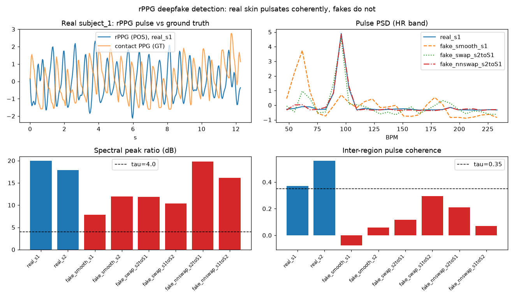

Region traces
Landmarks per frame → mean R/G/B colour in small ROIs: forehead, both cheeks, full face.
Two real face videos. Six GPU-generated fakes — including modern neural identity swaps from InsightFace inswapper_128. One signal no generator reproduces: the blood-flow pulse in real skin.
Landmarks per frame → mean R/G/B colour in small ROIs: forehead, both cheeks, full face.
The Plane-Orthogonal-to-Skin algorithm turns each colour trace into a pulse signal.
SPR — strength of the heart-rate spectral peak in dB. Coherence — do all regions show the same pulse?
REAL iff SPR ≥ 4 dB and coherence ≥ 0.35 and BPM is physiological (45–140).
| generator | technique | clips |
|---|---|---|
| smooth | 19-frame temporal average — the pulsation-free “generated” look. | fake_smooth_s1 · fake_smooth_s2 |
| swap | Classic landmark-warp + Poisson blend of a donor face. | fake_swap_s2toS1 · fake_swap_s1toS2 |
| nnswap | Modern neural swap — SCRFD detect → ArcFace identity → 554 MB generator → feathered paste-back, all on GPU. | fake_nnswap_s2toS1 · fake_nnswap_s1toS2 |
Identical clips, features and thresholds on both sides — only the landmark source differs. MediaPipe's Windows build is CPU-only; the GPU path runs every model on CUDA.
| clip | SPR (dB) | coherence | BPM | GT BPM | verdict |
|---|
Real skin agrees across face regions — every real bar clears the line, every fake bar stays under it.
nnswap clips keep a strong pulse peak (up to 19.8 dB) — SPR alone would call them real.

Coherence is shown because it decides the verdict. The two backends agree on every fake and on real_s2 — they differ on exactly one clip.
| clip | coherence MediaPipe | verdict | coherence GPU | verdict |
|---|
Shaded row = the single disagreement: real_s1 on the GPU path lands just under the
threshold (0.228 vs 0.35) — a false negative caused by ~6–9 px landmark error, not by the physiology
(its pulse is strong: SPR 18.4 dB, BPM 100 vs GT 98.5). The CPU reference clears the same threshold
by only 0.02, so landmark accuracy — not the rPPG signal — is the binding constraint.
SCRFD face detection, 478-point face mesh, ArcFace identity embedding and the 554 MB inswapper generator — all loaded on CUDA (onnxruntime-gpu 1.26). Utilisation sampled with nvidia-smi during the full 8-clip run.
| stage | util (mean / peak) | memory peak | power (mean) | throughput |
|---|---|---|---|---|
| neural-swap generation (2 × 360 frames) | 23% / 74% | 3.9 GB | 57 W | 3-stage pipeline |
| GPU trace extraction (8 clips) | 32% / 39% | 1.9 GB | 69 W | ≈60 fps |
| MediaPipe CPU extraction (8 clips) | ~0% (GPU idle) | — | 15 W | ≈167 fps |
Generation peaks at 74% because the decode → GPU swap → ordered paste pipeline keeps the generator fed. One honest caveat: MediaPipe's CPU build extracts landmarks faster (~167 vs ~60 fps) because it tracks across frames — the GPU path exists because MediaPipe's Windows wheel cannot use the GPU at all. It is what keeps the whole pipeline on the card.
Synthetic fakes are generated from the dataset for research only.
uv sync # onnxruntime-gpu 1.26 + CUDA 12 libs
uv run python deepfake_detect.py --frames 360 # generate swaps + full run (GPU auto)
uv run python deepfake_detect.py --extractor mediapipe # CPU reference run
uv run python tools/validate_gpu.py # landmark / inswapper validationOutputs: output/deepfake_ppg_results.json (per-clip features + GPU telemetry),
output/deepfake_ppg_demo.png, per-stage gpu_*.csv traces.